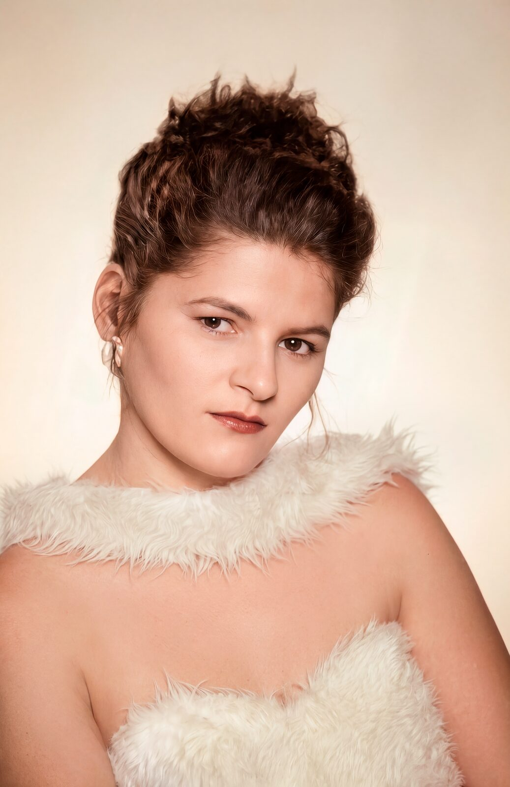
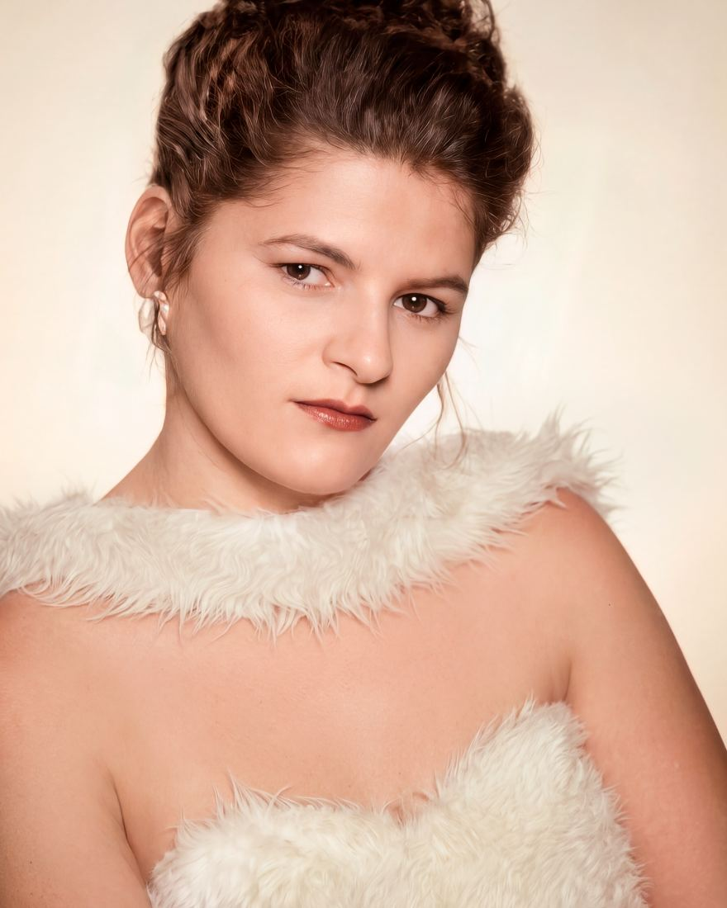
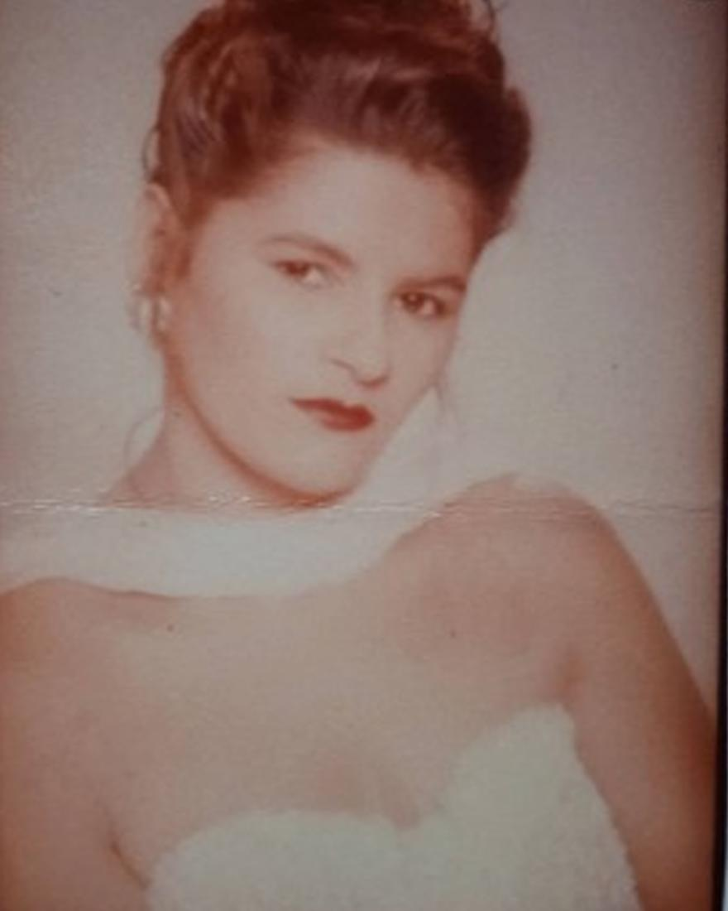

Restauração de fotos antigas feita por um designer especialista. Você vê a prévia antes de eu concluir. Não gostou? Devolvo o sinal.
Restauro fotos antigas, dou movimento a memórias e faço todo tipo de edição e manipulação de imagem. Escolha um serviço e peça seu orçamento.
Um olhar que se move, um sorriso que aparece, a respiração. Transformo a foto restaurada em um vídeo curto, delicado e fiel à pessoa. Perfeito para homenagens, aniversários e para apresentar quem a família não chegou a conhecer.
Arraste a linha para comparar. Trabalhos reais, feitos para clientes.


AntesDepoisSou transparente sobre como cada foto é feita. O trabalho principal é manual, em ferramentas profissionais de edição digital. A inteligência artificial entra em etapas específicas, sempre sob a minha revisão.
Conservadores de museu testam a limpeza numa pequena área antes de tratar a obra inteira. Passe o dedo ou o mouse sobre a foto.
Você escolhe o nível pelo estado da foto. Se ela precisar de um nível acima, eu aviso antes de começar.
Para começar, você paga 50% por Pix. Em até 24 horas mando a prévia. Se não gostar, devolvo o sinal inteiro. Se gostar, eu concluo e você paga os outros 50% na entrega.
Ajustes extras depois da rodada incluída: R$ 20.
Não precisa mandar a foto original. Uma boa foto do celular já serve.
Em luz natural, perto de uma janela, com o celular paralelo à foto e sem reflexo. Tire da moldura se tiver vidro.
Mande a foto e conte o que você quer. Eu respondo com o nível, o preço e o prazo.
Com o sinal por Pix, eu começo. Em até 24 horas você vê o rosto restaurado. Não gostou? Devolvo o sinal.
Pague os outros 50% e receba a foto completa em alta resolução, pronta para imprimir e compartilhar.
Sou designer gráfico e especialista em restauração de fotografias, com 5 anos de experiência e mais de 1.000 imagens restauradas. Minha atuação é voltada à recuperação de fotografias históricas e afetivas, unindo técnica, criatividade e sensibilidade para preservar memórias e resgatar detalhes perdidos pelo tempo.
5anos de
experiência
+1.000 imagens restauradas
Você paga 50% por Pix para eu começar. Em até 24 horas recebe a prévia. Se gostar, eu concluo e você paga os outros 50% na entrega.
Eu devolvo o sinal inteiro. Você só segue se gostar do resultado.
Sim, como ferramenta. O trabalho principal é manual, em edição digital. A IA ajuda a reenquadrar, recuperar detalhes e ampliar a resolução para impressão. Todo resultado passa pela minha revisão.
Na maioria dos casos, sim. Envie mesmo assim: eu avalio e digo com clareza o que dá para recuperar e em qual nível ela se encaixa, antes de você pagar.
Não. Uma foto bem tirada com o celular já serve, e a original continua com você. Se tiver scanner, melhor ainda.
A prévia sai em até 24 horas depois do sinal. A foto completa fica pronta em até 48 horas úteis. Precisa para amanhã? A urgência sai em 24 horas.
Pelo WhatsApp ou por e-mail, em alta resolução, pronta para imprimir, emoldurar e compartilhar.
Só com a sua autorização. Sem ela, a foto fica apenas entre nós.
Sim. O atendimento é todo online, para qualquer lugar do Brasil e do exterior.
Dá. Existe o vale-presente digital, com cartão personalizado, e o Pacote Homenagem, o mais escolhido para presentear.
Envie a sua pelo WhatsApp. Eu respondo com o nível, o preço e o prazo.
Enviar minha foto no WhatsApp Abre uma conversa no WhatsApp · resposta em até 1 hora